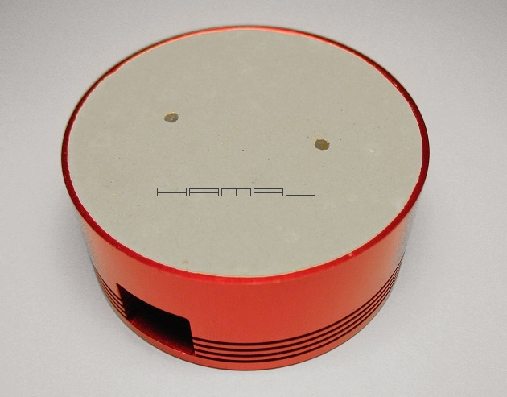
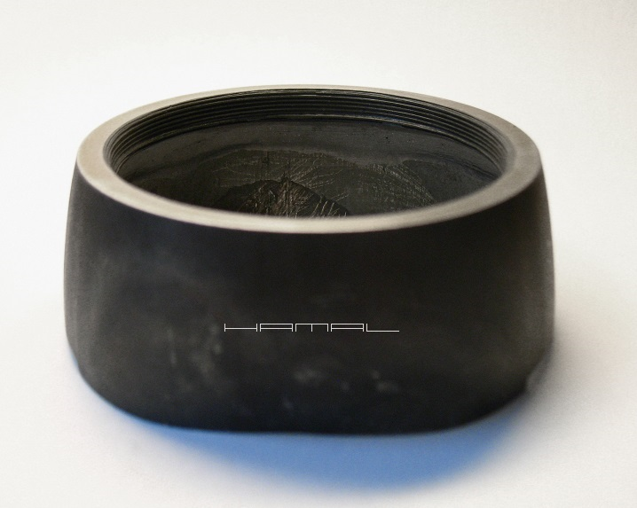
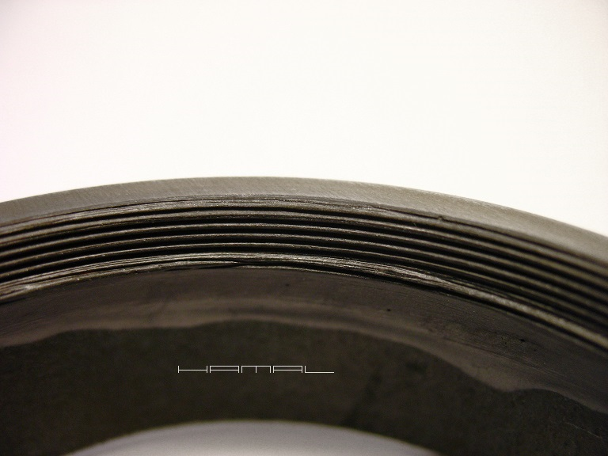
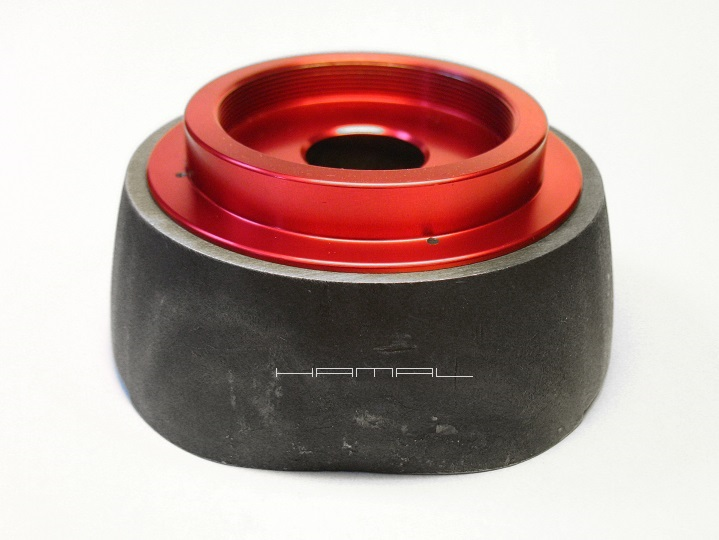

.
Samodzielna budowa kamerki astrofotograficznej
29-10-2017
|
Budując chłodzoną kamerkę na bazie bebechów niechłodzonej ZWO ASI, postanowiłem użyć jej oryginalnego frontu noska, osadzając go we własnym pierścieniu. Oryginalna puszka posiadała gwint, w który front noska był wkręcany, więc, abym mógł w swoim urządzeniu odtworzyć tę funkcję, winienem udać się do tokarza i poprosić o wytoczenie stosownego zwoju. I wtedy powstała myśl szalona, a może ..., gdybym tak..., z czegoś ten gwint w tym moim pierścieniu sam odtworzył? Ale z czego? Najlepiej z czegoś trwałego. Widziałem przecież niedawno w Castoramie żywicę "ciekły metal", może ona się nada :) Jak pomyślałem, tak zrobiłem. Kupiłem klej! Co dalej ? Odlew ! Uznałem, że najlepiej chyba będzie, zalać oryginalną puszeczkę ASI jakimś gipsem. Lecz gips kruchy jest. A może by tak klejem do płyt gipsowych do pomieszczeń!? Tak! Ten klej będzie trwalszy, prędzej odwzoruje drobne zwoje, bez kruszenia się. Kolejna kwestia. Odlew będzie trzeba potem z miejsca odlania wykręcić, więc nie mogę wypełnić klejem całej puszeczki do dna, lecz jedynie na poziomie gwintu. Wyciąłem więc wyrzynarką do okręgów kartonowy pierścień, zabezpieczyłem go taśmą, aby stał się wodoodporny i osadziłem w obudowie na odpowiedniej głębokości. Tak powstało denko wylewki. Aby odlew nie przykleił się za mocno do gwintu, posmarowałem go bardzo delikatnie, za pomocą pędzelka, olejem jadalnym. Można formę zalewać klejem.  Wylewka musi kończyć się idealnie wraz z brzegiem puszeczki i być idealnie równa. To będzie miało znaczenie potem, przy odlewaniu na niej idealnie równo gwintu żywicą dla noska kamerki. Następnego dnia, można przystępować do wykręcenia odlewu, ale pierwej, należy wykonać w nim za pomocą wiertła dwa otwory, w które wejdą dwa bolce klucza do tarcz flexa, to za jego pomocą uwolnimy odlew. Lecz zanim przystąpimy do mocowania się z zadaniem, jeszcze wcześniej warto celem odklejenia odlewu od formy po podgrzewać go suszarką i ostudzić na zmianę, ogrzewając się i rozszerzając, a potem stygnąc i kurcząc, dużo łatwiej forma odklei się od wylewki. Dodatkowo można formę bardzo delikatnie opukać dookoła drewienkiem. Teraz przechodzimy do drugiego etapu prac, mianowicie, odlewania żywicą gwintu w pierścieniu metalowym nowej kamerki. Wyciskamy żywicę, bardzo dokładnie mieszamy, bez pośpiechu, to nie poxipol, nie mamy na to 2 min :) następnie powoli, ostrożnie i dokładnie smarujemy dookoła nasz gwint gipsowy, następnie, smarujemy żywicą cienko wewnątrz pierścień nowej kamerki, układamy wszystko należycie i przystępujemy do wypełniania żywicą wolnych przestrzeni. Po zakończeniu czynności doglądamy tego przez ok. godzinę, gdyż żywica jest niebywale płynna i może się przemieścić w sposób, jakiego nie oczekujemy. Gdy zacznie twardnieć, zostawiamy całość na dobę, do całkowitego wyschnięcia. Po dobie przestępujemy do usuwania gipsowej formy, najlepiej wstępnie nasączając ją wodą. Nie jest to gips, lecz klej gipsowy, od wody nam się nie rozpuści, ale znacznie ułatwi ona nam jej kruszenie, bo wodoodporny to on do końca nie jest. Wykruszamy powoli, ostrożnie, nie spieszymy się. Gdy po wydłubaniu środka, zbliżymy się do gwintu, przechodzimy do łazienki i zaczynamy pod kranem szczotkowanie miękką szczoteczką resztek formy. Robimy to powoli, wzdłuż gwintu. Resztki kleju gipsowego, który uparcie tkwi nam w rowkach, już na sucho, wydobywamy miękką metalową szczotką do czyszczenia miedzi. Oczywiście, cały czas wzdłuż gwintu. Szczotkujemy tak długo, jak leci biały gipsowy pył, nawet gdy się zdaje, że została już sama żywica. Efekt? Zobaczcie sami :)  Odlany oczyszczony gwint z bliska. .  Pierwsze wkręcenia wykonujemy bardzo ostrożnie, aby gwint złapał prawidłowo :) Lekko podsmarowane chodzi naprawdę gładko, potem można odtłuścić, baza pozostanie. .  
|